— ALGORITHM CONTEST / 05
第五章 数学相关
素数筛、快速幂、组合数、高斯消元与博弈论，数学题往往是「建模 + 模板」两件事。
01 / SECTION
什么是数学？
- 数学是研究数量、结构、变化、空间的一门科学；竞赛数学主要用它的“工具属性”。
- 三个特点：抽象性、精确性、应用极广。
- 三大传统领域：代数学（研究数）、几何学（研究形）、分析学（沟通形与数、涉及极限）。
- 数学最重要的思维方式是演绎：由基础概念与公理推导定理。
- 演绎的作用：消去认识上的含糊与错误；把怀疑收敛到公理层面；用少量原理覆盖大量特例。
- 对竞赛的意义：多数“数学题”不是考公式记忆，而是考建模（把问题化成方程/同余/组合计数）与边界处理（取模、溢出、精度）。
- 常用工具箱：同余与快速幂、素数筛、组合计数、概率期望、矩阵快速幂、数论函数（gcd/lcm/欧拉函数）。
02 / SECTION
常用的数学运算符号及含义
- 基本运算：
+ - × ÷、乘方a^n、开方√a、绝对值|a|、阶乘n!。 - 求和/求积：
Σ（求和）、Π（求积），注意上下标含义与循环写法对应。 - 取整：
⌊x⌋向下取整、⌈x⌉向上取整、[x]常表示取整（不同教材含义不同）。 - 整除与同余：
a | b（a 整除 b）、a mod m、a ≡ b (mod m)。 - 数论函数：
gcd(a,b)最大公约数、lcm(a,b)最小公倍数、φ(n)欧拉函数、μ(n)莫比乌斯函数。 - 组合符号：
C(n,m)或\binom{n}{m}组合数、A(n,m)排列数。 - 逻辑与集合：
∧ ∨ ¬、∈ ∉ ⊆ ∪ ∩、∅。 - 竞赛提醒：符号本身不参与计算，写代码时要把“整除”“取模”“向下取整”严格区分，尤其负数取模（C++ 中
-7 % 3 == -1）。
03 / SECTION
什么是进位制？
- 定义：用有限的数码 + 位权表示数，
b进制下(d_k…d_0)_b = Σ d_i·b^i。 - 常用进制：二进制（计算机）、八进制、十六进制（
0x）、十进制（人）。 - 进制转换：
- b → 10：按位权展开累加（秦九韶/霍纳法：
x = x * b + d）； - 10 → b：不断除 b 取余，余数倒序即结果；
- b₁ → b₂：先转十进制再转目标进制（或按 2 的幂分组直接换位）。
- 小数部分：整数部分用除基取余，小数部分用乘基取整，注意二进制小数可能无限循环。
- 应用：状压（二进制）、位掩码、哈希 base、进制哈希、大数分解、
bitset优化。 - 细节：进制转换时注意前导零与负数符号；十六进制字符用
0-9a-f表示。
cpp
// 十进制转 b 进制
string toBase(long long x, int b) {
if (!x) return "0";
string s;
while (x) { s += char('0' + x % b); x /= b; }
reverse(s.begin(), s.end());
return s;
}04 / SECTION
位运算的应用
- 六个运算符：
&（与）、|（或）、^（异或）、~（取反）、<<（左移 = ×2^k）、>>（右移 = ÷2^k）。 - 常用技巧：
- 判奇偶：
x & 1； - 取最低位 1：
lowbit(x) = x & -x（树状数组的基础）； - 清掉最低位 1：
x & (x - 1)（可用于数 1 的个数、判 2 的幂）； - 统计 1 的个数：
__builtin_popcount； - 交换两数：
a ^= b; b ^= a; a ^= b； - 取某位：
(x >> k) & 1；置位：x |= 1 << k；清位：x &= ~(1 << k)；取反某位：x ^= 1 << k。 - 子集枚举：
for (int s = mask; ; s = (s - 1) & mask)遍历 mask 的所有子集，复杂度O(2^{popcount})。 - 状压 DP：把集合状态压成整数，转移用位运算判断冲突（如相邻位不能同为 1：
(s & (s << 1)) == 0）。 - 注意：
1 << 31在int上溢出（有符号），要用1LL << 31；集合大小 > 20 时状压会爆空间。
cpp
for (int s = 0; s < (1 << n); ++s)
for (int t = s; t; t = (t - 1) & s) // t 为 s 的非空子集
;
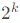
05 / SECTION
高精度计算的应用
- 场景：结果超出
long long（如 10000 位的大数、阶乘、幂）。 - 存储：字符串读入 → 逐位转成整数数组（低位在前），或“压位”（每 4~9 位存一个 int）提速。
- 加法：逐位相加 + 进位；减法：先比大小定符号，逐位相减 + 借位。
- 乘法：
- 高精 × 低精：逐位乘 + 进位，O(n)；
- 高精 × 高精：竖式 O(n²)，位数上万时改用 FFT/NTT 做卷积。
- 除法：
- 高精 ÷ 低精：从高位逐个“试商”，O(n)；
- 高精 ÷ 高精：逐位试商（二分或减法），O(n²)。
- 常见细节：前导零、负数、进位数组长度多开 1、输出时特判 0。
cpp
// 高精 × 低精
vector<int> mul(vector<int> a, int b) {
int carry = 0;
for (int i = 0; i < a.size(); ++i) {
int t = a[i] * b + carry;
a[i] = t % 10; carry = t / 10;
}
while (carry) { a.push_back(carry % 10); carry /= 10; }
while (a.size() > 1 && a.back() == 0) a.pop_back();
return a;
}06 / SECTION
复数的概念和运算
- 定义：
z = a + bi，i² = -1；a为实部、b为虚部。 - 运算：
- 加减：实部虚部分别加减；
- 乘法：
(a+bi)(c+di) = (ac-bd) + (ad+bc)i； - 除法：分子分母同乘分母的共轭
c-di，把分母实数化； - 共轭：
z̄ = a - bi；模|z| = √(a²+b²)；辐角θ = atan2(b, a)。 - 几何意义：复数 ↔ 平面向量；乘法 = 模相乘、角相加（旋转 + 缩放）。
- 竞赛用途：FFT/NTT 的推导基础（用单位根把多项式乘法变成点值乘法）；几何变换（旋转用复数乘）；解方程（三次方程卡尔达诺公式）。
- 实现时用
complex<double>，注意浮点误差。
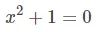
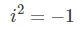
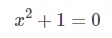
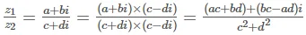
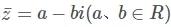
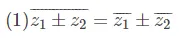
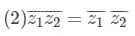
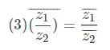
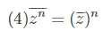
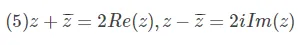
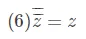
07 / SECTION
牛顿迭代法原理及其应用
- 思想：用切线逼近零点。由
f(x)=0，迭代x_{n+1} = x_n - f(x_n) / f'(x_n)。 - 收敛速度：在单根附近平方收敛（每步有效位数翻倍），一般 5~6 步就到 double 精度。
- 开平方：求
√a即解f(x)=x²-a=0，迭代x = (x + a/x) / 2。
cpp
double mysqrt(double a) {
double x = a; // 初值
for (int i = 0; i < 50; ++i) x = (x + a / x) / 2;
return x;
}- 开 k 次方：
x = ((k-1)*x + a/pow(x, k-1)) / k。 - 其它应用：求方程近似根、求倒数（
x = x*(2 - a*x)，硬件除法常用）、多项式求逆（配合 NTT）、几何最优化。 - 注意：初值选取影响收敛；多根/导数接近 0 处可能不收敛，需加保护（限制步长、回退）。
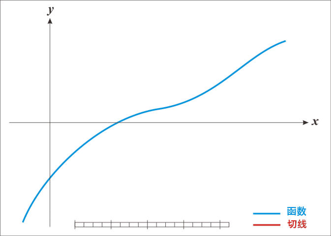
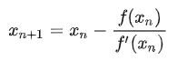
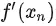
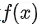
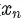
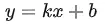
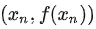
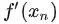
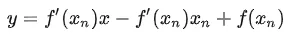
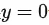
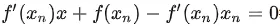
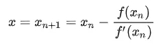
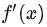
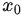
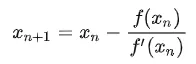
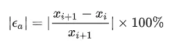
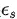
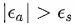
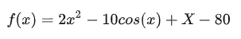
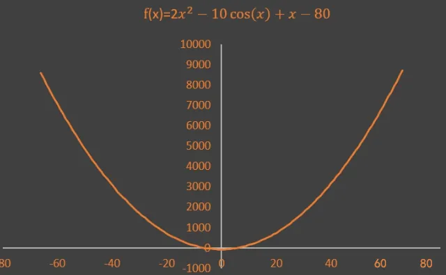
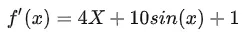
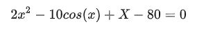
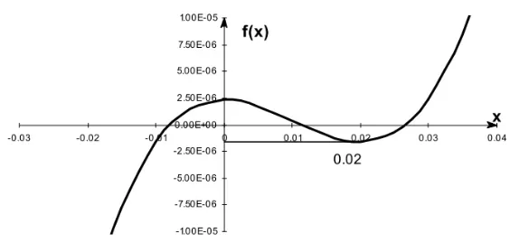
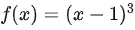
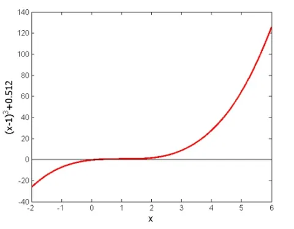
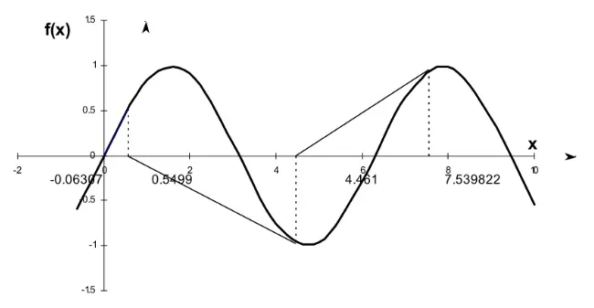
08 / SECTION
什么是数值积分？
- 问题：被积函数没有解析原函数（或只有离散数据点），需要数值近似
∫_a^b f(x)dx。 - 矩形法：把区间切成 n 段，用每段左/右端点的函数值当高度，
O(n)，误差O(1/n)。 - 梯形法：用两端点连成的梯形面积近似，
Σ (f(x_i)+f(x_{i+1}))/2 · h，误差O(1/n²)。 - 辛普森法（Simpson）：用抛物线拟合三点，
(b-a)/6 · (f(a) + 4f(mid) + f(b))，误差O(1/n⁴)，精度最高。 - 自适应辛普森：比较整段与两半的辛普森值，误差够小就返回，否则递归细分——竞赛求积分的主力写法。
- 应用：几何面积/体积、概率期望（连续分布）、物理仿真。
cpp
double simpson(double l, double r) {
double m = (l + r) / 2;
return (r - l) / 6 * (f(l) + 4 * f(m) + f(r));
}
double asr(double l, double r, double eps, double ans) {
double m = (l + r) / 2, L = simpson(l, m), R = simpson(m, r);
if (fabs(L + R - ans) < 15 * eps) return L + R + (L + R - ans) / 15;
return asr(l, m, eps / 2, L) + asr(m, r, eps / 2, R);
}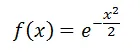
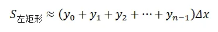
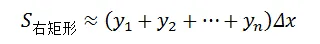
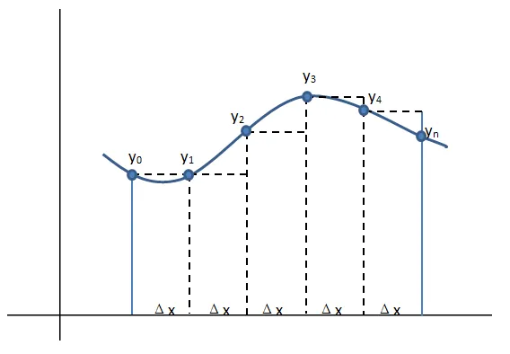
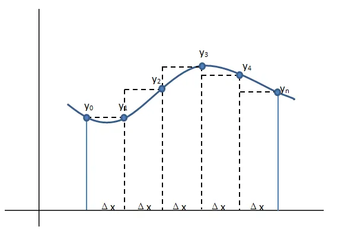
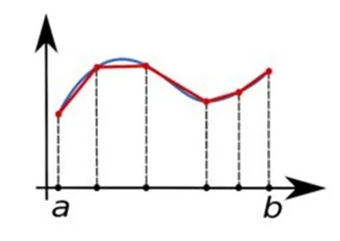
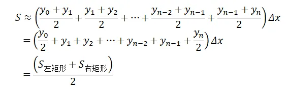
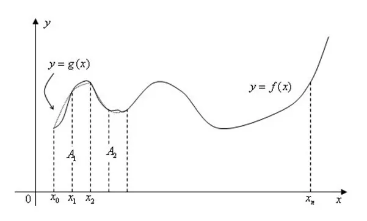
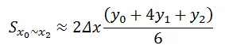
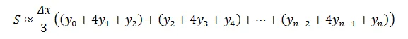
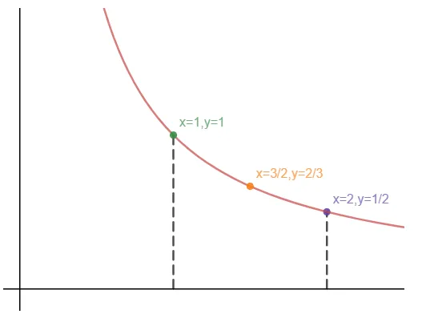
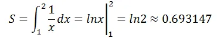
09 / SECTION
傅里叶-莫茨金消元法的应用
- 用途：解线性不等式组（或判断线性规划可行域是否存在）。
- 做法：每次消去一个变量 x：
- 把所有含 x 的不等式整理成
x ≥ L_i与x ≤ U_j； - 任意一对
(L_i, U_j)生成新不等式L_i ≤ U_j（不含 x）； - 删除所有含 x 的不等式，进入下一变量。
- 全部变量消完：若剩下
0 ≤ 负数这类矛盾 ⇒ 无解；否则可行。 - 代价：不等式个数按
(上界数 × 下界数)增长，最坏指数级爆炸，所以只适合变量很少的场合。 - 与其它方法对比：单纯形法适合大规模线性规划；FME 好处是只做加减、不涉及浮点，可精确判定可行性，也常用于“消元求投影”。
- 竞赛中出现较少，更多作为计算几何/线性规划的判定工具出现。


10 / SECTION
置换和排列的区别？
- 排列（Arrangement/Permutation）：从 n 个元素中取 m 个按顺序排成一列，方案数
A(n,m) = n!/(n-m)!。 - 组合（Combination）：只关心选了哪些、不关心顺序，方案数
C(n,m) = A(n,m)/m!。 - 置换（Permutation）：特指 n 个元素到自身的一一对应（双射），是一个映射而非“排列方案”；n 阶置换共 n! 个，构成置换群 S_n。
- 直观区别：排列是“列队方式”，置换是“把每个人换到另一个位置的操作”。
- 置换的表示：
(1 2 3)表示 1→2→3→1 的循环；任意置换可唯一分解为若干不相交循环，循环节长度之和为 n。 - 应用：Polya 计数（Burnside 引理）、置换快速幂（沿循环移动 k 步）、魔方/洗牌模拟、
next_permutation枚举全排列。


11 / SECTION
如何证明升幂定理？
- 升幂定理（LTE, Lifting The Exponent）：研究
v_p(aⁿ ± bⁿ)的精确值（v_p(x)表示 x 中含 p 的最高次幂）。 - 常见形式（p 为奇素数，
p ∤ a、p ∤ b、p | a - b）：
v_p(aⁿ - bⁿ) = v_p(a - b) + v_p(n)。
- 对
aⁿ + bⁿ：当 n 为奇数且p | a + b时，v_p(aⁿ + bⁿ) = v_p(a + b) + v_p(n)（p 为奇素数）。 - 特殊情形 p = 2 需要单独讨论（结论与 n 的奇偶、a、b 的奇偶性相关，通常要分情况升幂）。
- 证明思路（n 为 p 的幂时）：
- 先用因式分解
a^p - b^p = (a - b)(a^{p-1} + a^{p-2}b + … + b^{p-1})； - 证明第二个因式 ≡ p（mod p²）即只贡献一个 p；
- 再对指数做归纳（
n → pn时每次多贡献v_p(p) = 1），最后处理 n 中非 p 的部分（互素时贡献 0）。 - 用途：解指数型同余方程、证明整数不等式、构造反例、配合 gcd 求幂次。
cpp
// v_p(n!) 的 Legendre 公式：Σ n / p^i
long long vp_fact(long long n, long long p) {
long long s = 0;
while (n) { n /= p; s += n; }
return s;
}